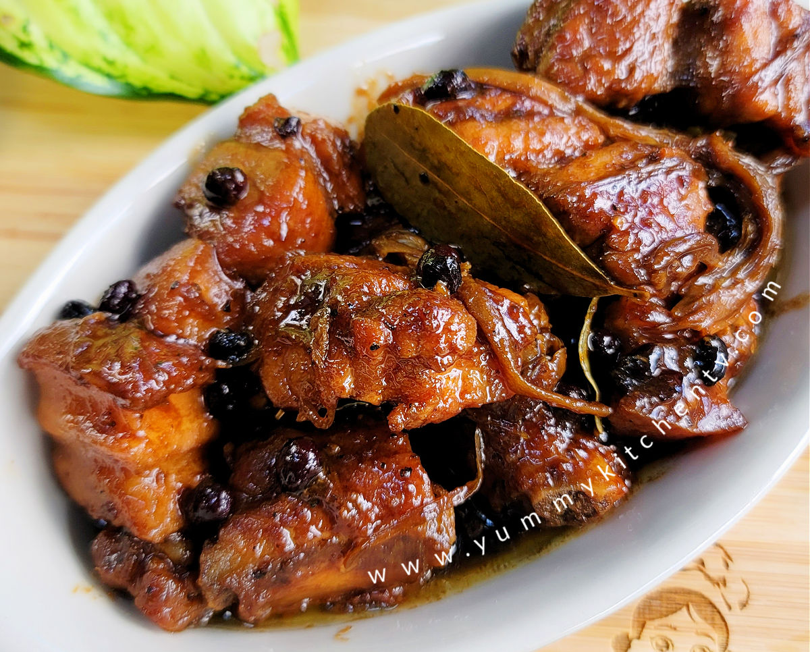

PinoyBoy's Cookbook
Pork Humba
Main Menu

Pork Humba is a dish typically served in Visayas and Mindanao. It is a sweet version of the usual Pork Adobo. Most Visayan House holds have their take on Humba but this recipe, which comes from the Small Town of Tuyan, City of Naga, Cebu, tops in simplicity and flavor.
Ingredients
- 2 kg Pork Belly
- 6 cloves Garlic
- 2 shallots
- 1 whole bunch of spring onions
- 1 pack of Fermented Black Beans
- 500 ml Sprite
- 1 cup soy sauce
- quarter cup vinegar
- sugar to taste
Cooking Process
- Cut up the Pork Belly into 2-inch pieces
- Add water to a Hot Wok, and put in the Pork Belly
- When water dissolves, add in oil and fry the pork belly until it shows browning, set aside when done
- In a different Pot, saute the garlic and onions
- form the spring onions to a bed on the bottom of the pot, and place the cooked pork belly on top of the spring onions
- pour in the sprite and pressure cook the pork for 10 mins
- check if pork is tender and cooked and let pork simmer in its juices
- add in soy sauce and vinegar taste
- Let simmer for 2-3 mins
Back to Main Menu